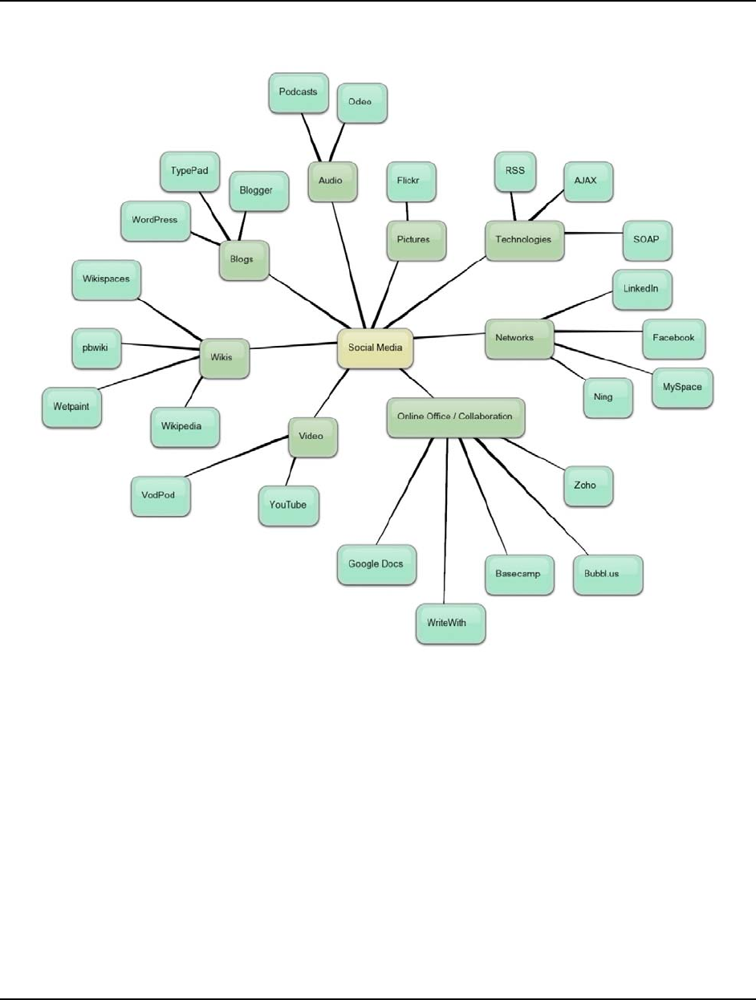
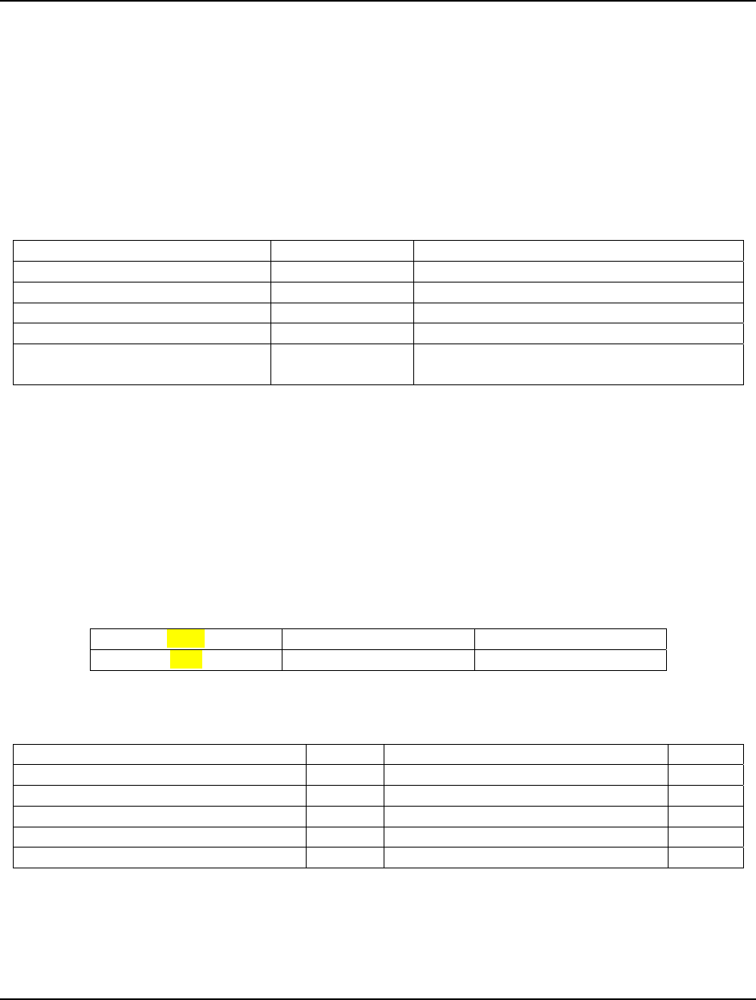
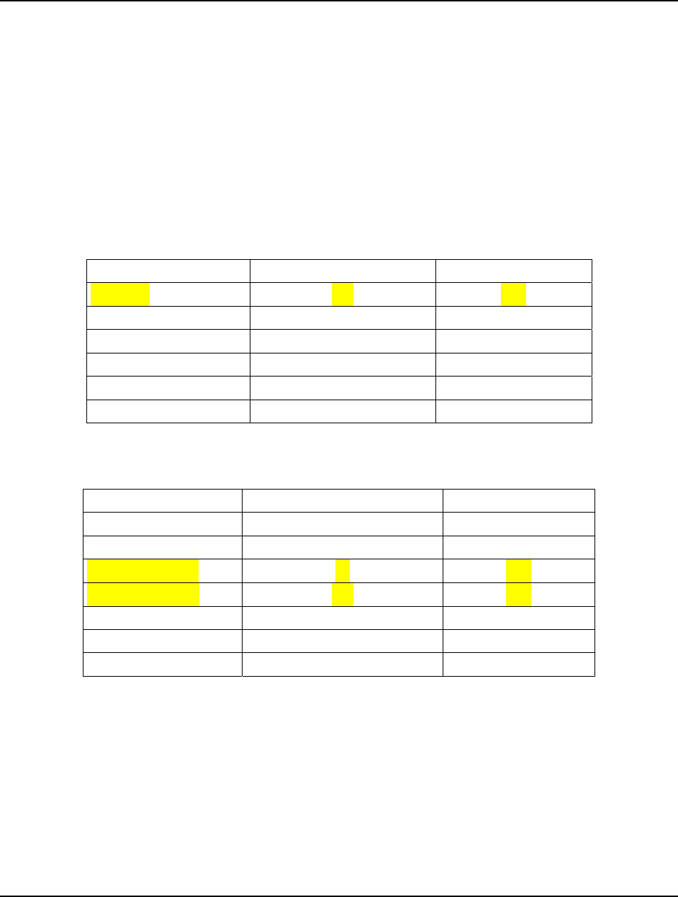
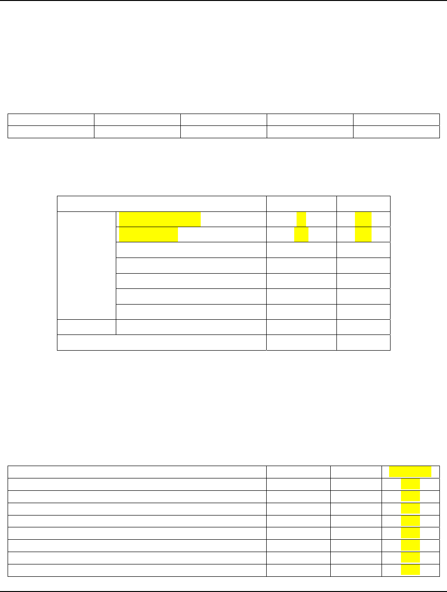
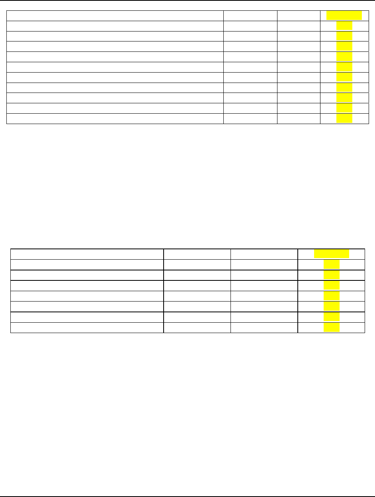
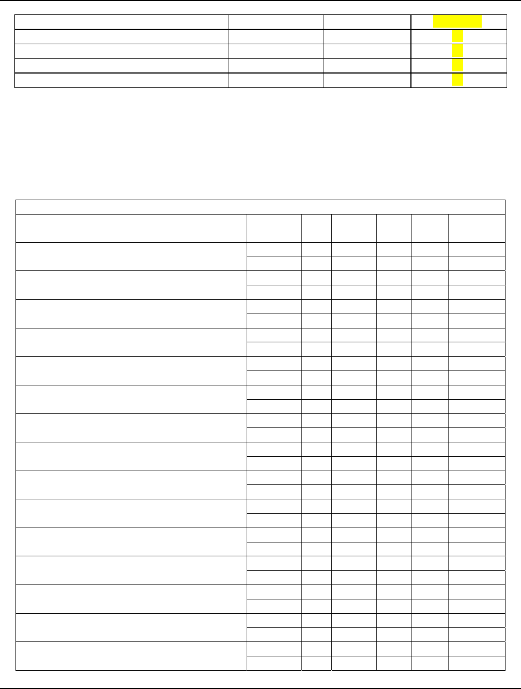
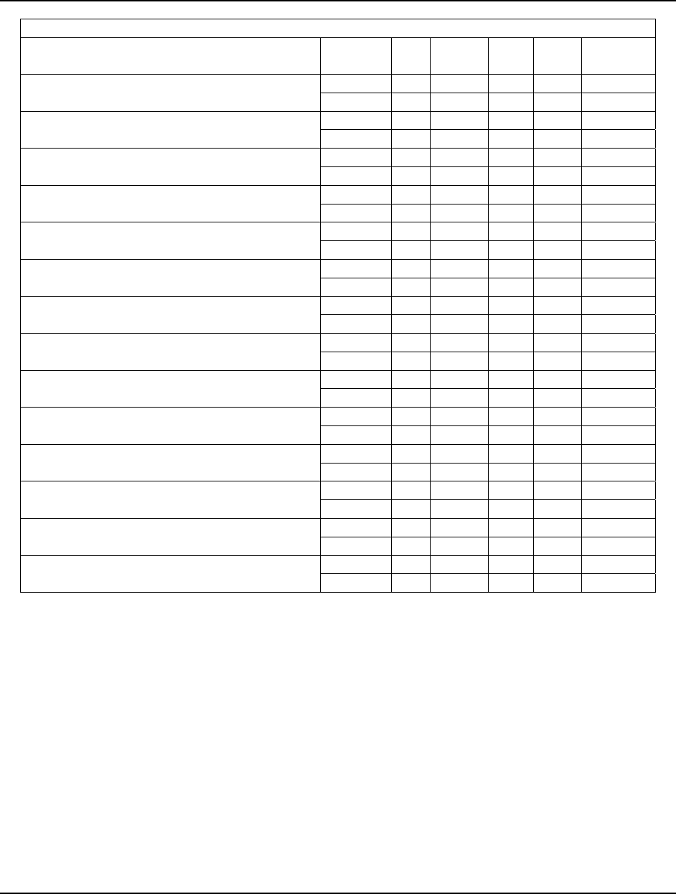
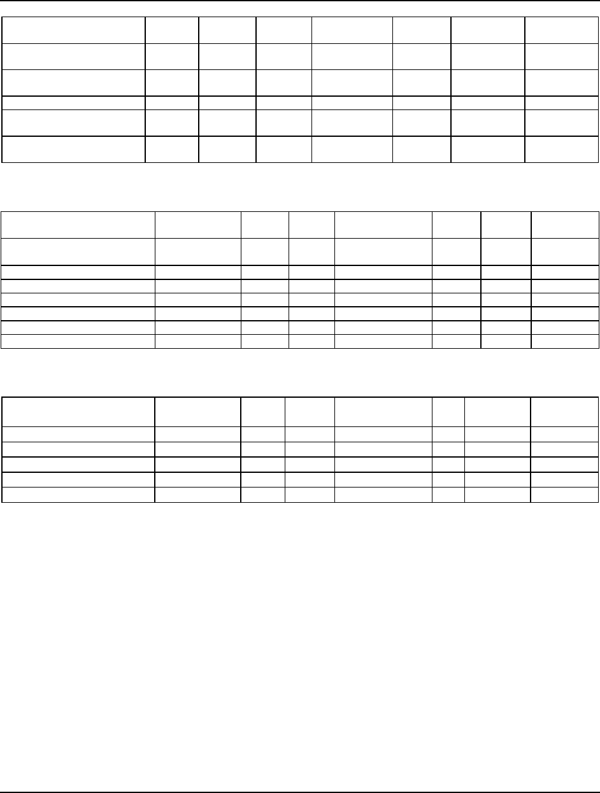

Page 109
Academy of Marketing Studies Journal, Volume 17, Number 1, 2013
STUDENTS PERCEPTION OF QUALIFICATIONS FOR
SUCCESSFUL SOCIAL MEDIA COORDINATOR
Ojoung Kwon, California State University at Fresno
Daihwan Min, Korea University Sejong Campus
Susan Geringer, California State University at Fresno
Sang-Kyu Lim, Youngsan University, Korea
ABSTRACT
Social media has grown explosively and become very popular in recent years; the
average time spent on social media is increasing steadily, especially among young people.
Organizations, public or private, have realized the importance of social media as a powerful tool
for establishing relationships with citizens or consumers. Although potential benefits from social
media could be enormous, organizations face a big challenge in taking advantage of social
media, since the old way of managing traditional media does not work for social media and
numerous social media platforms make the issue of managing social media complicated. More
and more organizations want to hire some professionals as an attempt to manage and utilize
social media effectively for their businesses or projects. Job titles commonly posted in the job
market are Social Media Coordinator, Social Media Specialist, Social Media Manager, Online
Community Manager, Public Relations Specialist, and so on. A latest report by US Department
of Labor estimated the number of jobs Public Relations Specialists in 2008 to be about 275,000
and projected jobs to grow 24% over the next decade, which would be much higher than other
occupations. Universities need to prepare a curriculum for students who want these jobs. The
authors of this paper surveyed about 400 students at a business school regarding various aspects
of social media and qualifications and skills for a successful Social Media Coordinator.
INTRODUCTION
Social media, defined as “a group of Internet-based applications that build on the
ideological and technological foundations of Web 2.0, and that allow the creation and exchange
of User Generated Content” (Kaplan & Haenlein, 2010), has grown explosively and become very
popular in recent years, thanks to the advances in diverse Web 2.0 technologies. Social media
platforms provide various SNSs (Social Network Services) which attract hundreds of millions of
users worldwide. According to ComScore, as of October 2011, 1.2 billion users are enjoying
SNSs around the world and 98% of online users in the US are using social media (ComScore,
2011a). More specifically, Facebook had 845 million active users at the end of December 2011

Page 110
Academy of Marketing Studies Journal, Volume 17, Number 1, 2013
(Facebook, 2012). Twitter hit 100 million active users in 2011 (Twitter, 2012) and an estimate of
registered Twitter accounts reached 500 million in February 2012 (Twopcharts, 2012).
In addition, the average time spent on social media is increasing steadily, especially
among young people. Online users were spending 19% of all time spent on the web in October
2011, in contrast with 6% in March 2007 (ComScore, 2011a). Millennials who were born
between 1981 and 2000 spent 41% of online time on Facebook in September 2011 (ComScore,
2011b).
Social media help users build social relationship by connecting members or inviting even
non-members. Users can interact with friends or meet new people in cyberspace. In addition,
users as consumers can also express or exchange their views on products/services or
organizations.
Public and private organizations have also realized the importance of social media as a
powerful tool for establishing relationships with citizens or consumers. They want to explore
opportunities that leverage on the popularity of social media. McKinsey survey reported that
72% of executives from 4,200 companies responded that they used at least one social media
platform (Bughin et al., 2011). Another survey result showed that 80% of companies use social
media for recruitment in 2011 (Jobvite, 2011) while another survey revealed that 93% of
marketers were employing social media for marketing (Stelzner, 2011).
There are well known cases where companies or individuals have already embraced
social media successfully. A pop singer has used social media to launch a new song and to
strengthen his celebrity image (Kaplan and Haenlein, 2012). Likewise, an organization can build
and strengthen its brand image or public relations. An organization can introduce a new
product/service into the global market through social media, in addition to traditional mass media
outlets. The Recording Academy implemented an integrated social media strategy for the 52
nd
Grammy Awards in 2010 with huge success (Wesley and Rohm, 2010; Hanna et al., 2011).
Although the potential benefits from social media could be enormous, organizations face
challenges in taking advantage of social media, since the old way of managing traditional media
does not work for social media and numerous social media platforms make the issue of
managing social media complicated. There are at least six types of social media, such as
collaborative projects (e.g., Wikipedia), blogs and microblogs (e.g., Twitter), content
communities (e.g., YouTube), social networking sites (e.g., Facebook), virtual game worlds (e.g.,
World of Warcraft), and virtual social worlds (e.g. Second Life) (Kaplan & Haenlein, 2009).
More and more organizations want to hire professionals in the area, as an attempt to
manage and utilize social media effectively for their businesses or projects. Job titles commonly
posted in the job market are Social Media Coordinator, Social Media Specialist, Social Media
Manager, Online Community Manager, Public Relations Specialist, and so on (D’Angelo, 2010),
although there are more than 80 job titles which involves the use of social media. The latest
report by the US Department of Labor estimated the number of jobs Public Relations Specialists
had in 2008 to be about 275,000 and projected jobs to grow over the next decade by 24%; a

Page 111
Academy of Marketing Studies Journal, Volume 17, Number 1, 2013
much higher rate than other occupations (Bureau of Labor Statistics, 2010). Universities need to
prepare a special curriculum for students who want this job. The authors of this paper surveyed
students at a business school about various aspects of social media.
LITERATURE REVIEW
Social Media in Marketing
Social media is not new to marketing, but it is nonetheless an important tool. New e-
marketing tools and technologies have led to the development of new marketing strategies
(Bradley 2011 and Luca 2011). One example as stated by Neff (2010) is that brands may often
find more traffic on their Facebook site fan page than on their corporate website. Neff also
stated that numerous brands use Facebook for relationship marketing making Facebook the
largest such provider in that field.
According to Finin, Joshi, Kolari, Java, Kale and Karandikar (2008), social media
systems have become an “important way to transmit information, engage in discussions and form
communities on the Internet. (p. 77). Corporations are striving to better understand the workings
of social media systems and how to implement them because one-third of new web content
represents such social media systems (Finen et al 2008). One area that social media tools have
changed is marketing as communication has begun focusing individuals on personal connections,
rather than on authorized spokespersons, and changing the opinion leader in the marketing realm
(Gowdy, Hildebrand, La Piana and Campos 2009). The number of technologies entering the
market on a constant basis keeps marketers extremely busy and presents an extreme challenge
for marketing strategists. According to Jarvenpaa and Tuunaimen (2012), social media
technologies (SMT) also are extremely helpful to marketers in that they “provide unparalleled
opportunities for customer relationship management (CRM), which is extremely vital in the
marketing world today.
Girard and Bertsch stated that (2011), the use of social media tools has provided
numerous benefits to marketers, in that emerging knowledge-sharing tools such as Facebook,
LinkedIn and Twitter “provide flexible, agile, and intuitive solutions for connecting people to
people and facilitating coordination, communication and collaboration” (pg. 98).
There appears to be no end to the popularity of social media in the United States.
According to Thomas (2010), “by the end of 2008, social networking had become more popular
than email” (p. 1). Madden (2010) commented that in 2009 social media usage increased from
41% to 61% in those aged 18 and older.
Social Media Coordinator
Research has indicated that corporations, profit and non-profit, are using social media
extensively and seek for well equipped Social Media Experts when searching for a Social Media
Coordinator to add to their staff. Marquette University stated that they hired a Social Media
Coordinator based on their story-telling experience, rather than their knowledge of current

Page 112
Academy of Marketing Studies Journal, Volume 17, Number 1, 2013
technological skills. They stated that they also sought an individual who was up-to-date in their
knowledge of new media and its relations to the social media market (Bosten 2011; Stageman
2009).
According to Harris, Harrigan and Naudin (2010, pg. 2), employers within the current
global marketplace are “seeking high level skills of communication, networking and
entrepreneurship in their potential employees.” In addition, the skills consistently extend to
social media usage through online methodology and engagement.
Student Usage of Social Media
Online social networking sites have grown considerably in the past few years. In
addition, blogs, virtual communities and personal websites have continued with their popularity
in the college student community to the point that such social media interaction has had a
profound effect upon how students communicate with their peers (Mendez, Curry, Mivaveta,
Kennedy, Weinland and Bainbridge 2009). In regards to Facebook, Pempek, Yermolayeva and
Calvert (2009) commented that undergraduate students spend approximately 30 minutes per day
on Facebook. According to Facebook.com data in 2011 this social media outlet had over 500
million active users. Twitter.com also echoes the importance of their place in social media with a
statement that they feature 140 million tweets per day. These forms of social media have led to a
figure of over 55% of young American youth who use internet on mobile devices.
One study looked specifically at the social media usage of university business majors.
Alexopoulos and Lynn (2010) found that business students, on average, own eight fixed or
portable electronic devices. The researchers included 988 viable subjects within the study. When
placing themselves on the Product Life Cycle, over 33% of the university student subjects
labeled themselves as early adopters of technology. In the same study, the business students rated
their favorite information communication technologies as Google, Moodle, Youtube, Linked In,
Bebo and Facebook. The study also found that 84% of the university students asked were using a
form of social media. McCool (2011) also stated the importance of Twitter to the college student
because it provides the student with a sense of contact rarely seen in other forms of social media
with celebrities and athletes.
Employer Usage & Gap Analysis
In addition to students, employers are also utilizing social media continuously. According
to Maclenod (2008) Facebook is used by 56% of young business managers and that Generation
Y members are definite fans of social media. Therefore, employers should seriously be using
social media for numerous reasons, particularly employing Facebook, company blogs, Youtube,
and virtual job boards for employee recruitment purposes. Han (2010) suggests that companies
should continue to look for other social media platforms than Facebook, as young users are
leaving Facebook for other channels to insure privacy from their parents and other factors.
Other uses for social media by employers are evident from previous research. According
to Gauravonomics (2010), corporate consultants can use social media for interactive consulting,
based on SWOT analysis and for-solution delivery.

Page 113
Academy of Marketing Studies Journal, Volume 17, Number 1, 2013
Employer Policy
The use of social media by employees may pose serious implications to a corporation
through lack of employee productivity, improper communications, and legal problems as well.
Because of such problems corporations may find it necessary to develop policies addressing
social media usage by employees while at work, as well as when not at work. According to
Thomas (2010), such policies may be necessary in the corporate workplace because “problems
associated with the discovery of electronically stored information may be directly applicable to
the discovery of information from social networking sites. Thomas goes on to warn corporations
that “the legal ramification of the use of social networking sites as a marketing tool, or as a
means of internal and external communication, must be addressed for companies to be prepared
in the event of litigation” (pg. 1) Edwards, Peters and Sharman (2001) warn that company policy
concerning social media usage must be clear or it may be destructive to corporate culture.
Welebir and Keiner (2005) also comment that acceptable Internet usage in the workplace may be
fitting to include in a statement of employee code of conduct. Some such policies merely discuss
the correct times of usage of the Internet at work, not specific lengths of time of usage
(Grossenbacher-Fabsits 2011).
Not only can employees waste valuable work time if employers encourage them to use
social networking sites but they can also “spill company secrets or harm corporate relationships
by denigrating business partners” (Baker 2009, page 23). It is easy to understand that businesses
are drawn to Web 2.0 because of its relatively low cost to operate, but businesses must also be
warned that they may wish to adopt broad policies stating that the company actually owns the
communication and computer systems used by employees and that “any information created and
stored on such systems is property of the company” (Bennett 2010, pg. 424). Bennett also states
that companies enact policies such as the one described to protect the company from legal risks
such as “leaks of confidential information, or exposure to claims of a hostile work environment”
(pg. 425). Unfortunately, employees may blur distinctions between correct social media usage in
personal and work times.
Kaupins and Park (2011) agree that employers should establish social networking
policies that are clear and that they should take the extra step and provide them to their
employees through various channels, including their company policy handbooks. After receiving
the policy information, employees should also acknowledge receipt of the policy and that they
have, in fact, read the policy. This may be accomplished by asking the employee to sign an
acknowledgement form. A more formal, rigorous activity will keep both employer and employee
on the same page as far as what is expected. This activity may also alleviate employee opinion
that their employer will not monitor their social networking activities. In addition, this activity
may help employers by not requiring them to block their employees from accessing social
networking tools, which may be looked at as potentially “unrealistic and unproductive” (Bennett
2010, pg. 428).
One ethical question also arises from the practice of employers searching their
employees’ social networking sites for private details about their current employees, as well as
their potential applicants (Kaupins and Park 2011). Although some individuals may find this

Page 114
Academy of Marketing Studies Journal, Volume 17, Number 1, 2013
action as unethical, it is stated by numerous corporations, both for-profit as well as non-profit, to
be the case of what is actually occurring.
Although it may be thought unwise to simply ban the usage of social media by their
employees, it may also be considered once one is made aware of the time spent on social media
sites by individuals. According to the Nielson Company, 22% of all time spent online is on social
media sites (Jungjck and Rahman 2011).
Student Policy
In addition to corporations, universities understand the need for the development of
student policies regarding social media usage, with misuse carrying the threat of possible
expulsion (Kind, Genrich, Sodhi, Chretien 2010; Skiba 2011; Williams 2011). Introduction of
such policies on the university campus may actually aid the student in becoming aware to such
policy and make the transition from campus to corporate expectations more palatable.
Qualifications
When hiring a Social Media Coordinator, Marquette University stated that the individual
was hired because of their story telling experience instead of their technological skills, although
the university did want the individual to be “savvy and knowledgeable about how to use new
media” (Stageman 2009, page 33). Whether they be known as a Social Media Coordinator, a
Social Media Specialist, or a Social Media Manager, these individuals are often “focused on
promoting, maintaining and monitoring brand or company image” (D’Angelo 2010, pg. 3).
A perusal of advertisements for Social Media Coordinators found that technical functions
for the position were not as common as content production functions. In addition, both written
and oral communications were significant in the desired applicants’ qualifications (D’Angelo
2010; McWilliam 2000). D’Angelo also commented that the ads looked for “strategists,
managers, content developers and writers and customer service representatives (pg. 5).
Social Media Tools and Technologies
As shown in Figure 1, Kriegler (2010) classified the Social Media into seven major
categories and supporting technologies (e.g. SOAP, AJAX, and RSS). The seven categories are:
1. Social Networks (e.g., Facebook),
2. Blogs and Microblogs (e.g., Twitter),
3. Wikis (e.g., Wikipedia),
4. Video (e.g., YouTube),
5. Pictures (e.g. Flickr),
6. Audio (e.g. Podcasts), and
7. Collaboration (e.g. Google Docs).

Page 115
Academy of Marketing Studies Journal, Volume 17, Number 1, 2013
Figure 1: Social Media Tools and Technologies (Kriegler 2010)
METHODOLOGY
The Variables and Survey Design
We are interested in students’ perception on the usage of social media (question # 2, 3, &
5); social media policy (question # 4, 6, 7, 8, 9, and 10); technical (all questions within #12),
communication (all questions within #13), and personal (all questions within # 14) qualifications
for successful social media coordinator (see attached survey form).

Page 116
Academy of Marketing Studies Journal, Volume 17, Number 1, 2013
Pilot Study
A pilot study was conducted to measure the internal consistency of the questions in each
variable. About 50 students from a Business School in Central California participated in the pilot
study. The findings on the variables (Cronbach Alpha) and their levels of reliability were as
follows:
Variables Cronbach Alpha Note
Social Media Usage .723 good
Social Media Policy .768 good
Technical Qualifications .724 good
Communication Qualifications .734 good
Personal Qualifications .802
very good - this was achieved by deleting the
question on global knowledge
Subjects and Data Collection
About 430 students attending a Business School in Central California participated in the
survey. Only 399 valid surveys were used for analysis. The subjects include 186 males (46.7%),
193 females (48.5%), and 20 no answers (4.8%). The age group breakdown and their major of
study are shown below:
#19. Age
17-24
25-39 >= 40
89%
9% 2%
#17. Field of Study
Accountancy 22% Computer Information Systems 6%
Entrepreneurship 5% Finance 6%
Human Resource Management 4% International Business 4%
Logistics/Supply Chain Strategies 1% Management 15%
Real Estate/Urban Land Economics 1% Sports Marketing 10%
Other 21% Total 100%

Page 117
Academy of Marketing Studies Journal, Volume 17, Number 1, 2013
RESULTS
Social Media Usage:
96% of the subjects indicated that they have used social media in the past whereas 92%
indicated that they are currently using some form of social media. Facebook (81%) dominates
their favorite SM followed by Twitter (6.5%) and Blogs (1.8%). Majority of students (79%)
indicated that they have used SM for 2 or more years.
#3. Favorite Social Media
Frequency Percent
Facebook 323 81.0
Twitter 26 6.5
Blogs 7 1.8
Others 24 6.0
missing 19 4.8
Total 399 100
#5. Years in using Social Media
Frequency Percent
Less than 1 year 25 6.3
Between 1-2 years 43 10.8
Between 2-3 years 94 23.6
More than 3 years 221 55.4
Never used 10 2.5
missing 6 1.5
Total 399 100.0
Social Media Policy:
42% of the subjects reported that their employers are currently using social media for
their businesses. 24% of the students indicated that employers have policies in the use of social
media. 17% of the students reported that employers have policies covering both usage at work
and outside of work. 20% of the students indicated that their employers actively block access to
social media at work. 18% of the students reported that employers monitor the use of social

Page 118
Academy of Marketing Studies Journal, Volume 17, Number 1, 2013
media at work. 19% of the students reported that the misuse of social media has been an issue at
their place of employment.
#15. Business Sector of Employer: 27% private, 43% public, 6% nonprofit sector.
#16. Size of their employer:
1-10 11-50 51-100 101-200 Over 200
20% 26% 12% 5% 18%
#11. Majority of students (54.1%) believe that SM as a tool for Career
Advancement.
Frequency Percent
Valid
1. Very Important 89 22.3
2. Important 127 31.8
3. Neutral 82 20.6
4. Unimportant 28 7.0
5. Very Unimportant 29 7.3
Total 355 89.0
Invalid 10 2.5
Missing System 34 8.5
Total 399 100.0
Technical Qualifications:
Students indicated that most of the SM elements are important to the success of a social
media coordinator position.
#12. Importance of Social Media Element (percent of missing is omitted)
Unimportant Neutral
Important
Social Networking (i.e. Bebo, Facebook, LinkedIn) 13% 15%
70%
Video Sharing (i.e. YouTube) 14% 16%
66%
Product Reviews (i.e. eopinions.com, TripAdvisor) 17% 17%
63%
Business Reviews (i.e. Customer Lobby, yelp.com) 18% 15%
63%
Livecasting (i.e. Ustream.tv, Skype) 17% 17%
62%
Community Q&A (i.e. Yahoo!Answers) 21% 18%
58%
Audio and Music Sharing (i.e. Last.fm) 19% 21%
57%
Social News (i.e. Digg) 24% 21%
52%

Page 119
Academy of Marketing Studies Journal, Volume 17, Number 1, 2013
Unimportant Neutral
Important
Photo Sharing (i.e. Flickr) 22% 22%
52%
Microblogging (i.e. Twitter) 25% 22%
51%
Events (i.e. Meetup.com, Eventful) 28% 19%
49%
Social Network Aggregation (i.e. FriendFeed) 27% 26%
44%
Wikis (i.e. Wikipedia, internal wikis) 27% 26%
44%
Social Bookmarking/ Tagging (i.e. Delicious, 1GoogleReader) 27% 27%
43%
Social Media analytics (i.e. Sysomos MAP, Alterian SM2) 28% 26%
43%
Blogs 34% 21%
43%
Virtual Worlds (i.e. SecondLife) 41% 22%
33%
Information aggregators (i.e. Netvibes, Twine) 38% 29%
31%
Communication Qualifications:
Students expressed that all the skills listed are important to the success of a social media
coordinator position. Computer Skills are top of the list with 84% followed by Intercultural
Skills (82%) and Written Communication Skills (80%).
#13. Importance of skills for the success of social media coordinator (percent of
missing is omitted)
Unimportant Neither
Important
Computer Skills
6% 8%
84%
Intercultural Skills
7% 8%
82%
Written Communication Skills
9% 8%
80%
Analytical/Quantitative Skills
8% 11%
77%
Interpersonal Skills
10% 10%
77%
Team Work Skills
10% 11%
76%
Verbal/Oral Communication Skills
11% 13%
73%
Personal Qualifications:
Students reported that all the traits listed are important to the success of a social media
coordinator position. Motivation/Initiative made the top of the list with 86% followed by
Honesty/Integrity (85%), Flexibility/Adaptability (84%) and Work Ethic (82%).
#14. Importance of traits for the success of social media coordinator (percent of
missing is omitted)

Page 120
Academy of Marketing Studies Journal, Volume 17, Number 1, 2013
Unimportant Neither
Important
Motivation/Initiative
7 7
86
Honesty/Integrity
8% 7
85
Flexibility/Adaptability
5 7
84
Work Ethic
6 8
82
We also found that there are significant gender differences on the qualifications for a
successful Social Media Coordinator as shown in the table below. Red color represents
significant difference between male and female.
Gender difference (red color represents significant difference between male and female)
Qualifications/Skills Gender N Mean
Std.
Dev.
t
Sig. (2-
tailed)
Blogs
male 184 4.09 1.858 -.451 .652
female 191 4.18 1.821 -.451 .653
Microblogging (i.e. Twitter)
male 183 4.46 1.898 -.450 .653
female 193 4.55 1.756 -.449 .654
Social Networking (i.e. Bevo, Facebook,
LinkedIn)
male 185 5.14 1.776 -1.486 .138
female 191 5.40 1.579 -1.483 .139
Social Network Aggregation (i.e. FriendFeed)
male 182 4.00 1.784 -2.289 .023
female 191 4.41 1.661 -2.285 .023
Events (i.e. Meetup.com, Eventful)
male 182 4.08 1.782 -3.360 .001
female 191 4.70 1.778 -3.359 .001
Wikis (i.e. Wikipedia)
male 182 4.19 1.747 -.532 .595
female 192 4.29 1.677 -.531 .596
Social Bookmarking/ Tagging (i.e. Delicious,
1GoogleReader)
male 182 3.95 1.735 -3.018 .003
female 192 4.46 1.551 -3.009 .003
Social News (i.e. Digg)
male 182 4.23 1.775 -2.705 .007
female 192 4.70 1.563 -2.696 .007
Photo Sharing (i.e. Flickr)
male 181 4.30 1.792 -2.697 .007
female 192 4.77 1.548 -2.685 .008
Video Sharing (i.e. YouTube)
male 181 5.13 1.597 .438 .661
female 192 5.06 1.492 .437 .662
Livecasting (i.e. Ustream.tv, Skype)
male 180 4.86 1.677 -.983 .326
female 191 5.03 1.657 -.983 .326
Audio and Music Sharing (i.e. Last.fm)
male 182 4.53 1.736 -2.616 .009
female 191 4.97 1.557 -2.610 .009
Product Reviews (i.e. eopinions.com,
TripAdvisor)
male 184 4.73 1.905 -2.501 .013
female 192 5.18 1.563 -2.491 .013
Business Reviews (i.e. Customer Lobby,
yelp.com)
male 184 4.74 1.938 -3.741 .000
female 192 5.43 1.620 -3.727 .000
Community Q&A (i.e. Yahoo!Answers)
male 184 4.51 1.771 -2.954 .003
female 191 5.04 1.712 -2.952 .003

Page 121
Academy of Marketing Studies Journal, Volume 17, Number 1, 2013
Gender difference (red color represents significant difference between male and female)
Qualifications/Skills Gender N Mean
Std.
Dev.
t
Sig. (2-
tailed)
Virtual Worlds (i.e. Second Life)
male 184 3.49 1.796 -1.392 .165
female 191 3.75 1.811 -1.392 .165
Information Aggregators (i.e. Netvibes, Twine)
male 186 3.54 1.762 -1.917 .056
female 190 3.88 1.691 -1.916 .056
Social Media analytics (i.e. Sysomos MAP,
Alterian SM2)
male 184 4.01 1.863 -2.489 .013
female 192 4.47 1.787 -2.487 .013
Verbal/Oral Communication Skills
male 183 5.44 1.633 -1.195 .233
female 192 5.65 1.659 -1.195 .233
Written Communication Skills
male 183 5.70 1.586 -1.793 .074
female 191 6.00 1.596 -1.793 .074
Interpersonal Skills
male 182 5.58 1.549 -1.298 .195
female 192 5.79 1.568 -1.298 .195
Team Work Skills
male 184 5.39 1.585 -2.193 .029
female 192 5.76 1.630 -2.195 .029
Analytical/Quantitative Skills
male 184 5.43 1.628 -2.709 .007
female 190 5.86 1.386 -2.702 .007
Computer Skills
male 184 5.85 1.493 -2.386 .018
female 190 6.19 1.271 -2.380 .018
Intercultural Skills
male 185 5.69 1.618 -2.796 .005
female 189 6.10 1.223 -2.787 .006
Honesty/Integrity
male 184 5.66 1.578 -3.803 .000
female 188 6.22 1.250 -3.793 .000
Motivation/Initiative
male 184 5.80 1.557 -3.108 .002
female 189 6.25 1.259 -3.100 .002
Work Ethic
male 183 5.83 1.531 -3.021 .003
female 190 6.26 1.262 -3.010 .003
Flexibility/Adaptability
male 183 5.92 1.396 -1.968 .050
female 189 6.20 1.271 -1.965 .050
CONCLUSION AND FUTURE RESEARCH DIRECTION
Almost every student (96% of the subjects) indicated that they have used social media in
the past. Facebook (81%) dominates their favorite SM followed by Twitter (6.5%) and Blogs
(1.8%). Majority of students (79%) indicated that they have used SM for 2 or more years. 42%
of the subjects reported that their employers are currently using social media for their businesses.
Students strongly expressed that all the skills listed in the Technical, Communication, and
Personal Qualifications are important to the success of a social media coordinator position. We
also found that there are significant gender differences on the qualifications for a successful
Social Media Coordinator.

Page 122
Academy of Marketing Studies Journal, Volume 17, Number 1, 2013
This study was conducted at a business school in Central California. We plan to expand
our target subjects at multiple locations in the nation to generalize our findings. We also plan to
survey employers to determine employers’ expectations for successful social media coordinator’s
qualifications. Then we should be able to conduct a gap analysis between students’ perception
and the employers’ expectations.
REFERENCES
Alexopoulas, A. and T. Lynn, (2010). Technology in the daily lives and educational experiences of business
students. Business School Techspectations. Retrieved February 26, 2012, from http://www.link.dcu.ie
Baker, S. (December 3, 2009). Beware social media snake oil. Business Week. Retrieved February 25, 2012, from
http://businessweek.com/magazine/content/09_50/b4159048693735.htm
Bennett, S. c. (2010). Civil discovery of social networking information, Southwestern Law Review, 39.
Bosten, S. (2011). Non-profit organizations and social media in the dialogue between non-profit organizations and
their stakeholders. Unpublished Master’s thesis, Tilburg University.
Bradley, T. (2011). Drive traffic with Face Book deals. PC World, 29 (2), 28.
Bughin, J., Byers, A. H. and Chui, M. (2011) How social technologies are extending the organization, McKinsey
Quarterly, Nov. 2011
Bureau of Labor Statistics (2010) Occupational Outlook Handbook, 2010-11 Edition
ComScore (2011a). ComScore Media Metrix, Worldwide, March 2007 – October 2011, Oct. 2011
ComScore (2011b). ComScore Media Metrix, Sep. 2011
D’Angelo, B. J. (2010) Social Media Community Management: Implications for Business Communication
Curriculum, Proceedings of the 75th Annual Convention of the Association for Business Communication
October 27-30, 2010 – Chicago, Illinois.
D’Angelo, B. J. (2010). Social media community management: Implications for business communication
curriculums, Proceedings of the 75
th
Annual Convention of the Association for Business Communication.
Chicago, Ill.
Ecosystem Business Horizons, 54, 265—273
Edwards, P. Peters, M. and G. Sharman, (2001). The effectiveness of information systems in supporting the
extended supply chain. Journal of Business Logistics, 22 (1), 1-27.
Facebook (2012) Retrieved February 28, 2012, from http://newsroom.fb.com/content/default.aspx?NewsAreaId=22
Finin, T., Joshi, A., Kolari, P. Java, A., Kale, A., and A. Karandikar (2008). The information ecology of social and
online communities, Artificial Intelligence Magazine, 29 (3), 77-91.
Gauravononimcs (2010). Social Media Outsourcing. Retrieved February 26, 2012, from
http://www.gauravonomics.com
Girard, J. and A. Bertsch (2011). Differences in social knowledge creation and exchange: A preliminary
examination, International Journal of Management and Information Systems, 15 (1), 97-104.
Godwin, B. (2008). Matrix of Web 2.0 Technology and Government. Retrieved March 5, 2012, from
http://www.howto.gov/sites/default/files/documents/Web_Technology_Matrix.pdf
Gowdy, H., Hildebrand, A., La Piana, D. and M. M. Campos, (2009). Convergence: How strands will reshape the
social sector, The James Irvine Foundation. Retrieved February 26, 2012, from
http://www.lapiana.org/nonprofitnext
Grossenbacher-Fabsits, D. M. (2011). Male middle managers’ perceptions of non-work related Internet use.
Unpublished Master’s Thesis. University of Phoenix.

Page 123
Academy of Marketing Studies Journal, Volume 17, Number 1, 2013
Han, J. (2010). Employer branding: Leveraging Web 2.0. Unpublished Master’s Thesis. Royal Institute of
Technology.
Hanna, R., Rohm A., Crittenden, V. L. (2011) We’re all connected: The power of the social media
Harris, L., Harrigan, P. and A. Naudin, (2010). Integrating “employability” into the HE curriculum: Case studies of
online portfolio implementation in the UK. Retrieved February 27, 2012, from
http://www.eprints.soton.ac.uk
Jarvenpaa, S. L. and V. K. Tuunainen, (2012). Company tactics: Finnair’s rethink quality and quality hunter’s
initiatives. Retrieved February 26, 2012, from
http://information.aalto.fi/en/research/ressem/hiccs2012_jarvenpaa_tuunainen_final.pdf
Jobvite (2011) 2011 Social Recruiting Survey Results. Retrieved March 1, 2012, from http://www.jobvite.com
Junjak, K. and S. M. Rahman, (2011). Information security policy concerns as case law shifts toward balance
between employer security and employee privacy. Retrieved February 27, 2012, from http://world-
comp.org/p2011/SAM4094.pdf.
Kaplan, A. M., & Haenlein, M. (2009) The fairyland of second life: About virtual social worlds and how to use
them. Business Horizons, 52(6), 563—572.
Kaplan, A. M., & Haenlein, M. (2010) Users of the world, unite! The challenges and opportunities of social media,
Business Horizons, 53(1), 59—68.
Kaplan, A. M., & Haenlein, M. (2012) The Britney Spears universe: Social media and viral marketing at its best,
Business Horizons, 55(1), 27—31
Kaupins, G. and S. Park (2011). Legal and ethical implications of corporate social networks. Employee
Responsibilities and Rights Journal, 23 (2), 83-99.
Kind, T., Genrich, G., Sodhi, A., and K. C. Chretien, (2010). Social media policies at U. S. medical schools. Medical
Education Online, 15 (10).
Kriegler, L. (August 21, 2010). Social Media Tools and Technologies. Retrieved March 5, 2012, from
http://www.slideshare.net/LKriegler/social-media-tools-and-technologies.
Luca, P. (2011). Social media dialogue: An analysis of the social media presence of selected Fortune 500
companies. Unpublished Master’s Thesis, Liberty University.
Maclenod, A. (2008). Generation Y: Unlocking the talent of young managers. Retrieved February 25, 2012, from
http://new.managers.org
Madden, S. (2010). Reputation management and social media. Washington, D. C. Pew Internet and America Life
Project. Retrieved February 26, 2012, from
http://pewinternet.org/~/media/Files/Reports/2010/PIP_Reputation_Management.pdf.
McCool, L. B. (2011). The pedagogical use of Twitter in the university classroom. Unpublished Master’s Thesis,
Iowa State University.
McWilliam, G. (2000). Building stronger brands through online communities. Sloan Management Review, 41 (3),
43-53.
Mendez, J.P., Curry, J., Mivavita, M., Kennedy, K., Weinland, K. and K. Bainbridge, (2009). To friend or not to
friend: Academic interaction on Face Book. International Journal of Instructional Technology and
Distance Learning, 6 (9), 33-47.
Neff, J. (2010). What happens when Face Book trumps your brand site? Advertising Age, 81 (30), 2-22.
Pempeck, T. A., Yermolayeva, Y. A., and S. Calvert, (2009). College students’ social networking experiences on
Face Book. Journal of Applied Developmental Psychology, 30 (3), 227-238.
Skiba, D. J. (2011). Nursing education 2.0: The need for social media policies for schools of nursing. Nursing
Educational Perspective, 32 (2), 126-127.
Stageman, A. (2009). Consulting social media in the college tradition process: Experiential accounts of the Class of
2014. Unpublished Master’s Thesis, Marquette University.

Page 124
Academy of Marketing Studies Journal, Volume 17, Number 1, 2013
Stelzner, M. A. (2011) 2011 Social media marketing industry report: How Marketers Are Using Social Media to
Grow Their Businesses
Thomas, L. (2010). Social networking in the workplace: Are private employers prepared to comply with discovery
requests for posts and tweets? Southern Methodist University Law Review, 63, 1373.
Twitter (2012). Retrieved February 25, 2012, from https://business.twitter.com/en/basics/what-is-twitter/
Twopcharts (2012). Retrieved February 25, 2012, from http://twopcharts.com/twitter500million.php
Welebir, B. and B. Kleiner, (2005). How to write a proper Internet usage policy. Management Research News, 28
(2/3), 80.
Wesley, D., & Rohm, A. (2010). Social media and the Grammy Awards: The ‘we’re all fans’ campaign. Boston:
Northeastern University.
Williams, J. (2011). New scholars review committee report. Comparative and International Education Society.
Albany, New York.

Page 125
Academy of Marketing Studies Journal, Volume 17, Number 1, 2013
ATTACHMENT: SURVEY QUESTIONNAIR FORM
We are distributing this survey to collect data regarding social media for a MBA project. Both the students and
faculty members involved in this research would like to thank you for taking the time to complete this survey. If
you would like to be provided with the findings of our research, then please provide your email at the end of this
survey.
Thank you,
Dr. Ojoung Kwon, Kelvin Alfaro, Nassreen El-Dahabi and Dr. Susan D. Geringer
In regard to the following questions, please circle the ONE selection that best describes your answer.
1. Have you ever used social media/networking in the past?
Yes
No
2. Do you currently use social media/networking (e.g., LinkedIn, Facebook)?
Yes
No
3. What is your favorite social media network?
Facebook
Twitter
Blogs
Other (please specify) ___________________________________________________________
4. Does your employer (internships included) use some form of social media/networkin
g
for their
business?
Yes
No
Don’t Know
5. If you use social media/networking, how long have you used them?
Less than a Year
Between 1–2 Years
Between 2–3 Years
More than 3 Years
I have never used them
6. Does your place of employment maintain any policies in relation to using social networking?
Yes
No
Don’t Know
7. If your place of employment has policies in place in relation to social networking, do they cover both
uses at work and outside of work?
Just at work
At work and outside of work
No such policies exist
8. Does your employer actively block access to social networking sites at work?
Page 126
Academy of Marketing Studies Journal, Volume 17, Number 1, 2013
Yes
No
Don’t know
9. Does your employer monitor the use of social networking sites at work?
Yes
No
Don’t Know
10. Is the misuse of social networks ever an issue for you or others at your place of employment?
Yes
No
Don’t know
11. How important is Social Media as a tool to promote and market your career advancement?
Very Important
Important
Neither Important or Unimportant
Unimportant
Very Unimportant
For the purposes of this study, the term “social media coordinator,” refers to a person who is responsible fo
r
identifying, evaluating, and securing advertising on behalf of an employer through various social media platforms.
The goal of any social media coordinator is to determine which outlets will allow the organization to reach its
intended audience in the most effective manner and who can tactfully develop creative concepts and seamlessly
execute them into compelling digital social media experiences
12. Circle only one answer for each question that represents the importance of each social networking
element in relation to the success of a social media coordinator position. (On a scale from 1 to 7, with 7 = very
Important and 1= very unimportant)
Very
Unimportant
Neither Important
or Unimportant
Very Important
Blogs 1 2 3 4 5 6 7
Microblogging (i.e. Twitter) 1 2 3 4 5 6 7
Social Networking (i.e. Bebo,
Facebook, LinkedIn)
1 2 3 4 5 6 7
Social Network Aggregation (i.e.
FriendFeed)
1 2 3 4 5 6 7
Events (i.e. Meetup.com,
Eventful)
1 2 3 4 5 6 7
Wikis (i.e. Wikipedia, internal
wikis)
1 2 3 4 5 6 7
Social Bookmarking/ Tagging (i.e.
Delicious, 1GoogleReader)
1 2 3 4 5 6 7
Social News (i.e. Digg) 1 2 3 4 5 6 7
Photo Sharing (i.e. Flickr) 1 2 3 4 5 6 7
Video Sharing (i.e. YouTube) 1 2 3 4 5 6 7
Livecasting (i.e. Ustream.tv,
Skype)
1 2 3 4 5 6 7
Audio and Music Sharing (i.e.
Last.fm)
1 2 3 4 5 6 7
Product Reviews (i.e.
eopinions.com, TripAdvisor) 1 2 3 4 5 6 7

Page 127
Academy of Marketing Studies Journal, Volume 17, Number 1, 2013
Very
Unimportant
Neither Important
or Unimportant
Very Important
Business Reviews (i.e. Customer
Lobby, yelp.com)
1 2 3 4 5 6 7
Community Q&A (i.e.
Yahoo!Answers)
1 2 3 4 5 6 7
Virtual Worlds (i.e. SecondLife) 1 2 3 4 5 6 7
Information aggregators (i.e.
N
etvibes, Twine)
1 2 3 4 5 6 7
Social Media analytics (i.e.
Sysomos MAP, Alterian SM2)
1 2 3 4 5 6 7
Other(s) (please specify) _______________________________________________________
13. How important are the following skills to the success of a Social Media Coordinator?
Very
Unimportant
Neither Important
or Unimportant
Very
Important
Verbal/Oral Communication
Skills
1 2 3 4 5 6 7
Written Communication Skills 1 2 3 4 5 6 7
Interpersonal Skills 1 2 3 4 5 6 7
Team Work Skills 1 2 3 4 5 6 7
Analytical/Quantitative Skills 1 2 3 4 5 6 7
Computer Skills 1 2 3 4 5 6 7
Intercultural Skills 1 2 3 4 5 6 7
14. How important are the following traits to the success of a Social Media Coordinator?
Very
Unimportant
Neither Important
or Unimportant
Very
Important
Honesty/Integrity
1 2 3 4 5 6 7
Motivation/Initiative
1 2 3 4 5 6 7
Work Ethic
1 2 3 4 5 6 7
Flexibility/Adaptability
1 2 3 4 5 6 7
Global Knowledge
1 2 3 4 5 6 7
Please circle the ONE correct answer for each of the following questions
15. What is the business sector of your current employer?
Private sector
Public sector
Nonprofit Sector (Voluntary/Charities)
Other (please specify)________________________________________________________

Page 128
Academy of Marketing Studies Journal, Volume 17, Number 1, 2013
16. How many individuals does your organization employ?1-10
11-50
51-100
101-200
201 or More
17. What is your field of study?
Accountancy
Computer information Systems
Entrepreneurship
Finance
Human resource management
International Business
Logistics/supply chain strategies
Management
Real estate/Urban Land Economics
Sports Marketing
Other (please specify)_______________________________________________________
18. What is your Gender?
Male
Female
19. What category represents your age group?
17-24
25-39
40-59
60+
20. If you are interested in our findings, please provide your email address below:
21. In what ZIP code is your home located? (enter 5-digit ZIP code; for example, 00544 or 94305):
________________________________
22. Name of your company? (optional) _________________________________

Reproduced with permission of the copyright owner. Further reproduction prohibited without
permission.